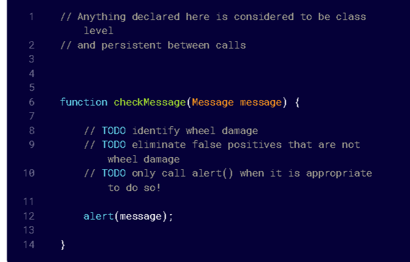
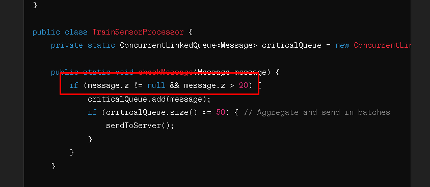
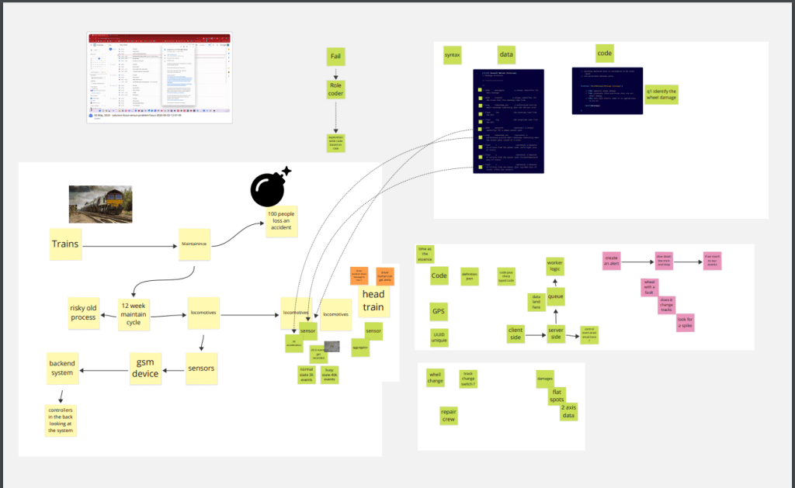
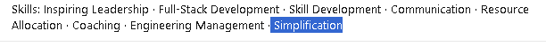

Solution Seeking vs Problem Seeking
Solution Seeker > just one line


Problem seeker cognition > Stresses the solution seekers due to the fact that there are more thing that gets laid out there!
*ReDefines it * >https://miro.com/app/board/uXjVKMs3t6E=/

In Java, to handle a high volume of messages (3,000 to 4,000 per minute) and efficiently process sensor data to identify wheel damage, you'll need a well-optimized system that can handle aggregation and offload data to a server-side queue system efficiently. Below, I'll provide a sample implementation that includes:
-
A function to check each message.
-
Aggregating results if the G-Force on the Z-axis exceeds 20G.
-
Sending the aggregated data to a server-side component via a queue.
We'll assume the use of a concurrent queue to handle the data efficiently given the high throughput requirements.
Java Code Setup
-
Message Class: Define a simple class to represent the message data structure.
-
CheckMessage Function: A method to process incoming messages.
-
Server-Side Component: A method to simulate sending data to a server-side queue.
Here's a possible implementation in Java:
import java.util.concurrent.ConcurrentLinkedQueue;
class Message {
String messageId;
long timestamp_sen;
double lat;
double lng;
Float x, y, z;
String sensorId;
public Message(String messageId, long timestamp_sen, double lat, double lng, Float x, Float y, Float z, String sensorId) {
this.messageId = messageId;
this.timestamp_sen = timestamp_sen;
this.lat = lat;
this.lng = lng;
this.x = x;
this.y = y;
this.z = z;
this.sensorId = sensorId;
}
}
public class TrainSensorProcessor {
private static ConcurrentLinkedQueue
public static void checkMessage(Message message) {
if (message.z != null && message.z > 20) {
criticalQueue.add(message);
if (criticalQueue.size() >= 50) { // Aggregate and send in batches
sendToServer();
}
}
}
private static void sendToServer() {
System.out.println("Sending to server: ");
while (!criticalQueue.isEmpty()) {
Message m = criticalQueue.poll();
System.out.println("MessageId: " + m.messageId + " SensorId: " + m.sensorId + " Timestamp: " + m.timestamp_sen + " G-Force Z: " + m.z);
}
}
public static void main(String[] args) {
checkMessage(new Message("id1", 1650000000000L, 34.05, -118.25, 0.5f, 1.2f, 21.0f, "123"));
checkMessage(new Message("id2", 1650000000100L, 34.06, -118.26, 0.4f, 1.1f, 19.9f, "124"));
}
}
Key Points:
-
Concurrency: We use
ConcurrentLinkedQueueto handle concurrent operations on the queue safely. -
Batch Processing: Data is sent to the server in batches (here simulated as 50 messages) to optimize network utilization and reduce overhead.
-
Server Communication: In a real-world scenario, the
sendToServer()method would integrate with a server-side queue system like RabbitMQ or Kafka. This integration depends on the specific technologies and infrastructure you're using.
This example is scalable and should perform well under the load you specified, assuming that the server-side components can also handle the incoming data efficiently. Remember to implement exception handling and logging in a production environment to manage errors and monitor system performance effectively.
Solution seeking confirmation

I should have also pasted the Miro into gpt and iterated slowly
Imported from rifaterdemsahin.com · 2024